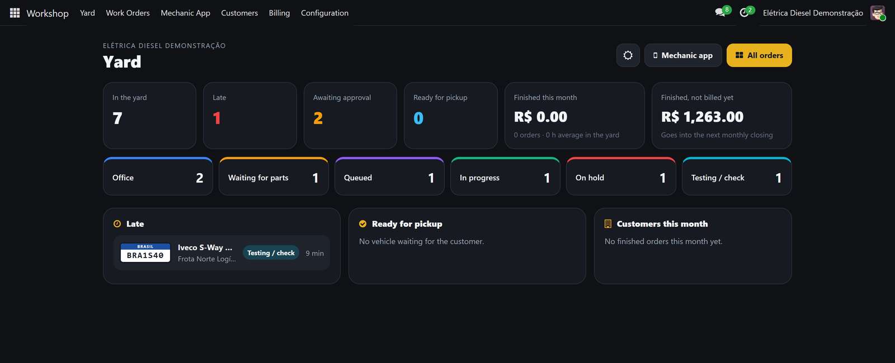
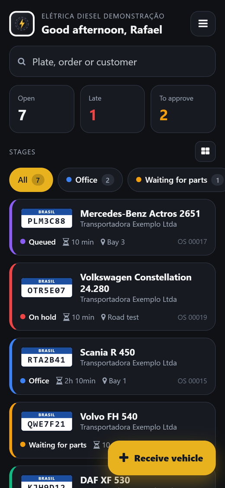
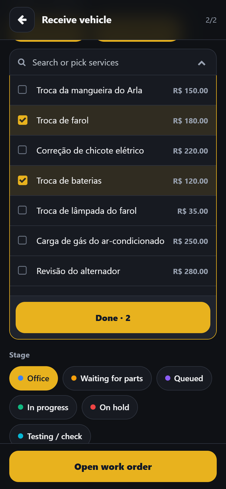
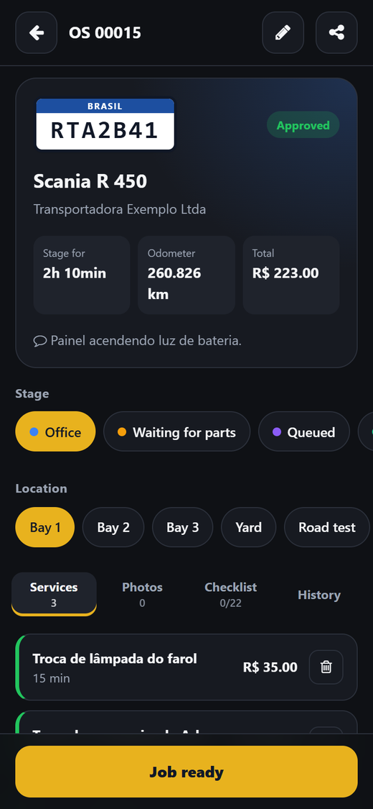
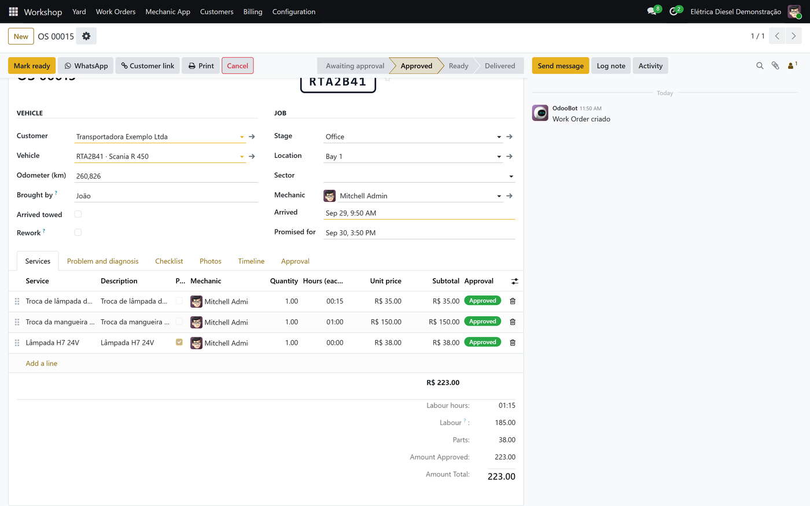
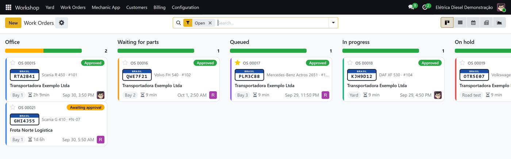
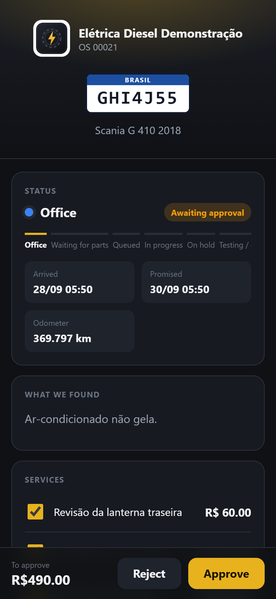
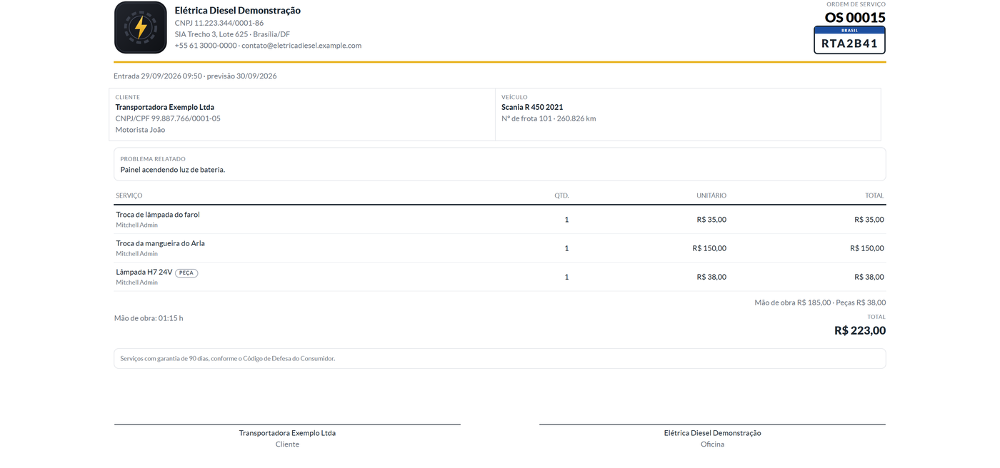
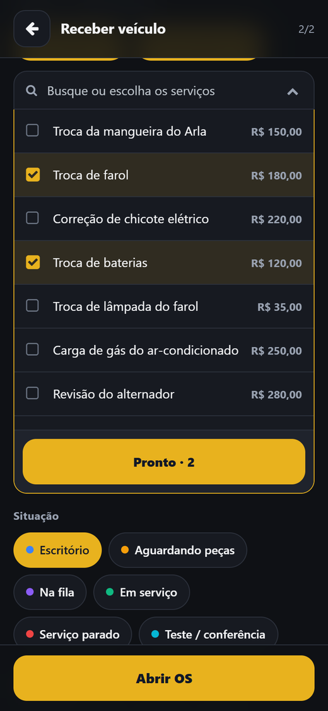

Oficina OS · Odoo 19
Built with a truck electrical and air-conditioning shop in Brazil. The mechanic receives the truck by its plate, adds services, photos and the checklist on the phone; the office follows the yard on a dashboard, sends the quote by WhatsApp, the customer approves it by link with a signature, and each fleet is billed once a month.
Try the live demo Office: escritorio / escritorio · Mechanic: mecanico / mecanico · the first visit of the day takes about a minute to wake up


The yard, by stage

Receiving a truck

An order: services, photos, checklist

A work order in the office, services and parts apart

The order board

The customer approves by link

Work order PDF with the shop's brand
Ordens de serviço para oficinas de frotas (elétrica, ar-condicionado, diesel), feitas junto com uma oficina de caminhões no Brasil. O mecânico recebe o caminhão pela placa, lança serviços, peças, fotos e o checklist no celular; o escritório acompanha o pátio no painel, manda o orçamento pelo WhatsApp, o cliente aprova pelo link com assinatura, e cada frota é faturada uma vez por mês, pronta para a NFS-e.
Tudo em português, com a sua marca. Veja a demonstração: oficina-os.onrender.com (escritório: escritorio / escritorio, mecânico: mecanico / mecanico).

Licence: Odoo Proprietary License v1.0 (OPL-1). Questions and support: use the contact button on this page. Documentation: user manual and developer guide in English and Portuguese, on github.com/pdmoura/oficina-os.